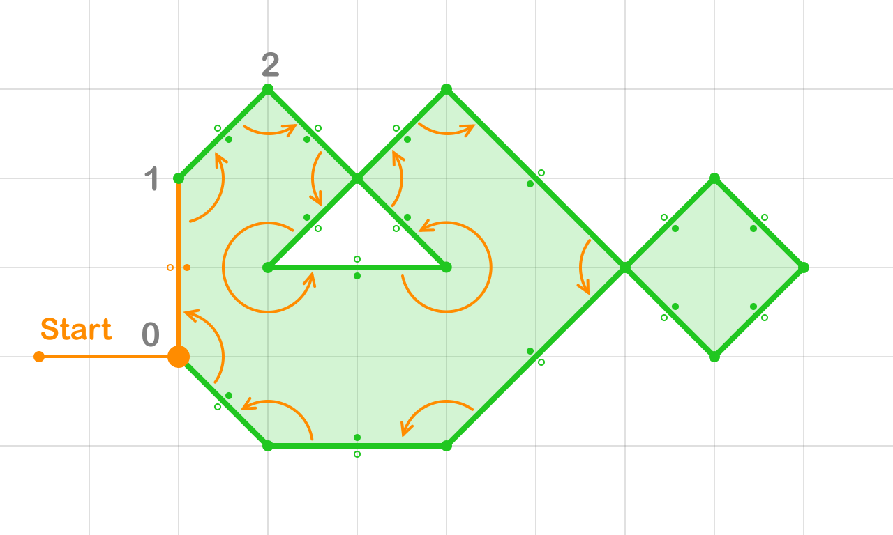
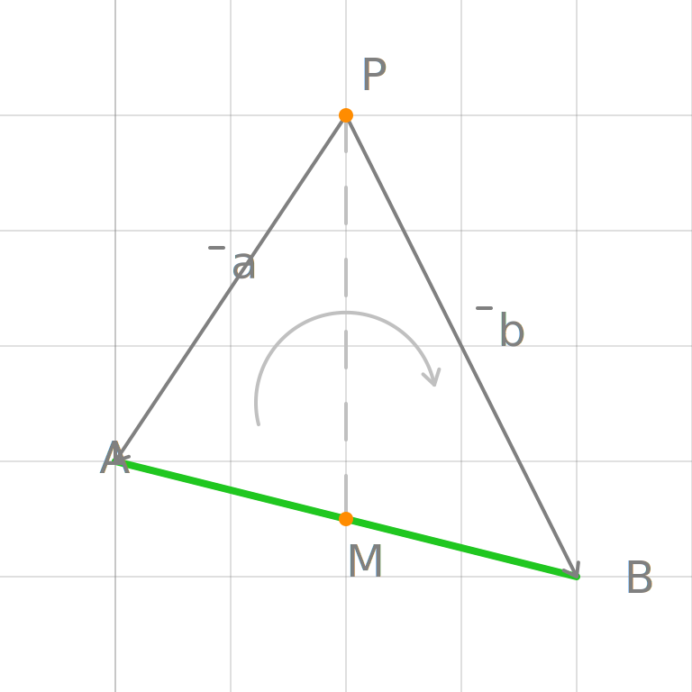

Extract Shapes
Once we apply boolean filter to Overlay Graph, we can begin extract contours.
Build Contour
Outer Contour

Inner Contour
The algorithm starts by selecting the leftmost node and proceeds by choosing the topmost segment connected to that node. The process continues by traversing to the next node along the selected segment.
At each node, the algorithm selects the next segment by rotating around the current node in a counterclockwise direction and taking the first nearest segment.
To prevent segments from being visited twice, each segment is marked as visited upon traversal.
This process continues until the contour is complete, forming either an outer or inner contour.
By following this approach, outer contours are extracted in a clockwise direction, while inner contours are extracted in a counterclockwise direction.
Define Contour

To define a contour, the algorithm begins by identifying the leftmost and topmost segment in the contour. The classification of the contour is determined as follows:
- If the left-top side of the segment is classified as the outer side, then the contour is an outer contour.
- If the left-top side of the segment is classified as the inner side, then the contour is an inner contour.
This method ensures each contour is correctly classified based on its orientation in 2D space.
Define Shape

A shape is defined as a group of contours, where the first contour is always an outer contour, and the subsequent contours (if any) are inner contours.
Matching Contours
 To match inner contours to their corresponding outer contour, a line is drawn from any point on the inner contour. The first segment encountered from an outer contour beneath this point belongs to the outer contour that contains the inner contour. This outer contour serves as the container for the inner contour.
To match inner contours to their corresponding outer contour, a line is drawn from any point on the inner contour. The first segment encountered from an outer contour beneath this point belongs to the outer contour that contains the inner contour. This outer contour serves as the container for the inner contour.
Define Segment under Point
Segment under Point

To determine whether a segment AB is below a point P, one may be tempted to compute the value of ym at the point of intersection M, where a vertical line is dropped from P onto AB (i.e., xp = xm):
$$ y_{m} = \frac{y_{a} - y_{b}}{x_{a} - x_{b}}\cdot(x_{m} - x_{a}) + y_{a} $$
However, this approach can introduce precision issues due to the division involved.
A more reliable method involves using the order of traversal around the vertices of the triangle APB. If segment AB is below point P, the vertices A, P, and B will appear in a clockwise order.
This method uses the cross product of vectors PA and PB:
$$ a \times b = a_x b_y - a_y b_x $$
Since this method avoids division, it eliminates precision issues, making it stable for determining whether a segment is below a point.
Selecting the Closest Segment under Point
When multiple segments are positioned below point P, we need to determine which segment is the closest to P. This scenario can be divided into three distinct cases based on the configuration of the segments relative to P.
Left Case

When both segments share a common left vertex A, we check the positions of their right endpoints. If the vertices B0, B1, and A form a clockwise pattern, then AB0 is closer to P than AB1.
Right Case

When both segments share a common right vertex B, we check the positions of their left endpoints. If the vertices A0, A1, and B form a clockwise pattern, then A1B is closer to P than A0B.
Middle Case

In this case, one of the vertices (e.g., A1 or B0) lies inside the opposite segment. We use the point-segment comparison method to determine which of the segments is closer to P.